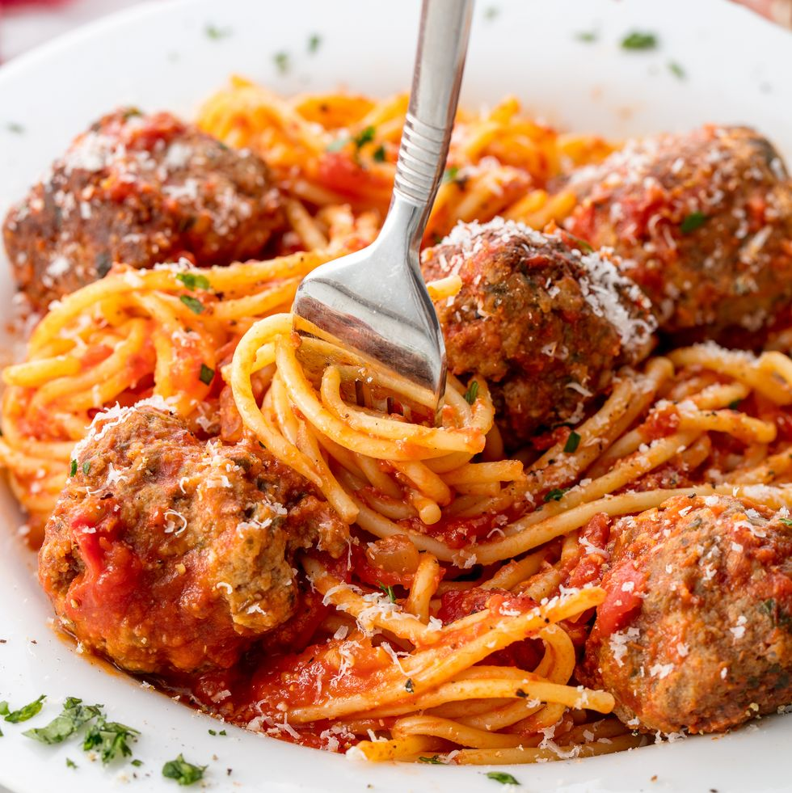

Spagetti & Meatballs

Description
The classical Italian dish. No more to add.
Ingredients
- 8 good-quality pork sausages
- 1 kg beef mince
- 1 onion, finely chopped
- ½ a large bunch flat-leaf parsley, finely chopped
- 85g parmesan, grated, plus extra to serve (optional)
- 100g fresh breadcrumbs
- 2 eggs, beaten with a fork
- olive oil, for roasting
- spaghetti, to serve (about 100g per portion)
For the meatball sauce
- 3 tbsp olive oil
- 4 garlic cloves, crushed
- 4 x 400g cans chopped tomatoes
- 125ml red wine (optional)
- 3 tbsp caster sugar
- ½ a large bunch of flat-leaf parsley, finely chopped
- few basil leaves (optional)
Steps
-
First, make the meatballs. Split the skins of the sausages and squeeze out the meat into a large mixing bowl.
-
Add the mince, onion, parsley, parmesan, breadcrumbs, eggs and lots of seasoning. Get your hands in and mix together really well – the more you squeeze and mash the mince, the more tender the meatballs will be.
-
Heat the oven to 220C/200C fan/gas 7. Roll the mince mixture into about 50 golf-ball-sized meatballs. Set aside any meatballs for freezing, allowing about five per portion, then spread the rest out in a large roasting tin – the meatballs will brown better if spaced out a bit.
-
Drizzle with a little oil (about 1 tsp per portion), shake to coat, then roast for 20-30 mins until browned.
-
Meanwhile, make the sauce. Heat the olive oil in a large saucepan. Add the garlic cloves and sizzle for 1 min.
-
Stir in the chopped tomatoes, red wine, if using, caster sugar, parsley and seasoning. Simmer for 15-20 mins until slightly thickened.
-
Stir in a few basil leaves, if using, spoon out any portions for freezing, then add the cooked meatballs to the pan to keep warm while you cook the spaghetti in a pan of boiling, salted water.
-
Spoon the sauce and meatballs over spaghetti, or stir them all together and serve with extra parmesan and a few basil leaves, if you like.